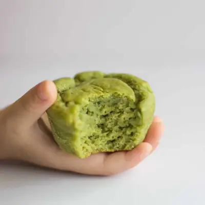

Moist Spinach Muffins

Ingredients
- 2 cups white whole wheat flour (245g) or rolled oats (200g)
- 1 teaspoon baking powder
- 1/2 teaspoon baking soda
- 1 teaspoon cinnamon
- a pinch of salt
- 3/4 cup whole milk plain Greek yogurt (170g)
- 1/3 cup milk of choice
- 2 medium very ripe bananas (240g weighed weighed without peel)
- 2 eggs
- 2 cups loosely packed baby spinach
- 1 teaspoon vanilla extract
- Optional (for added nutrition and texture): 1/2 cup raw grated sweet potatoes or carrots, see note and/or 1/3 cup finely chopped walnuts
- Optional for additional sweetness: (3-4 tablespoons maple syrup, honey, or date syrup)
Steps
- Preheat oven to 375 degrees Fahrenheit.
- In a large bowl, stir together the dry ingredients. If using rolled oats, blend in the food processor until it becomes a fine flour.
- Add all the wet ingredients into a blender and blend until smooth.
- Combine the dry and wet ingredients. Be careful not to over mix. Use a spatula (instead of a whisk) to gently stir together until all the flour is wet. The less you stir the mixture, the lighter and fluffier your muffins will be. At this point you can stir in the optional sweet potatoes/carrots and/or nuts.
- Divide batter evenly into a greased, lined or silicone 12-cup muffin pan.
- Bake for 20-25 minutes or until an inserted toothpick comes out clean. Allow the muffins to cool for at least 5 minutes before transferring to a cooling rack to cool completely.
Recipe by Min Kwon · Kidfriendly Meals, from MJ and Hungryman. Saved here for personal use; the original has the full notes, tips and photos. Open original